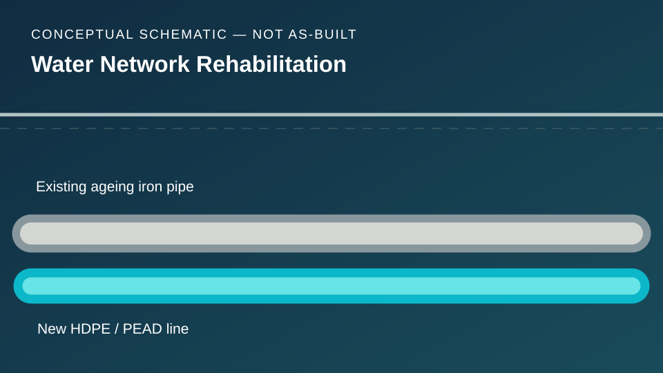
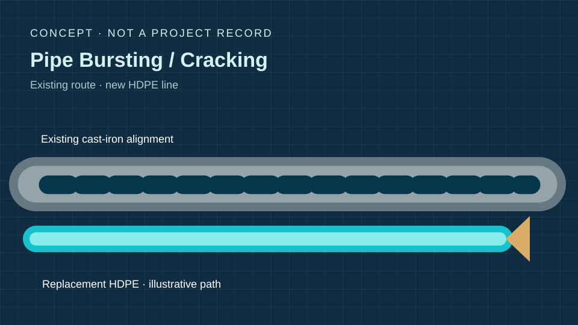
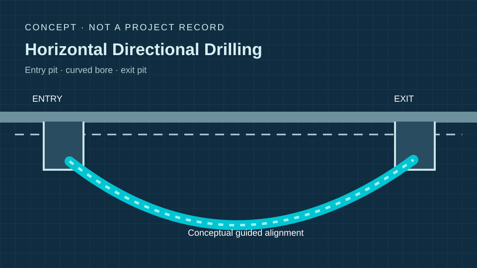

01 — WATER SYSTEMS
Urban water networks
HDPE/PEAD pipe replacement, ageing iron networks, design/mapping support and awareness of underground-service constraints in dense urban settings.
I’m Alice Silva de Sousa, a Civil Engineer with experience across water-network engineering support, construction coordination and project controls in Brazil. I combine technical documentation, field awareness, cost and schedule tracking, and stakeholder communication to help deliver infrastructure projects.
My experience spans engineering design support and the practical disciplines that make project execution traceable: planning, interfaces, measurement, reporting and document control.
HDPE/PEAD pipe replacement, ageing iron networks, design/mapping support and awareness of underground-service constraints in dense urban settings.
Work breakdown structures, project milestones, take-offs, quantity tracking, budgets, contractor coordination and progress reports.
Site-engineering interface, local authorities, suppliers, subcontractors, utility contacts, safety coordination and technical document registers.
A personal case study based on my work at SANIT Engenharia (June 2017 – June 2018), supporting projects associated with SABESP. My role was Sanitation Engineering Intern, working alongside engineering and field teams.

A practical project-controls framework that brings together experience from later construction and facilities roles. Download the demonstration workbook to see editable quantity measurement, scope, risk and variation registers.
| Example deliverable | Practical use in a water-network project | Portfolio file |
|---|---|---|
| Scope & WBS | Construction work packages, control gates, deliverable ownership and criteria. | Workbook / Scope & WBS |
| Quantity measurements | Installed and accepted pipeline lengths, unit rates, earned value and remaining quantity. | Workbook / Measurements |
| Risk & variation registers | Existing services, permitting, traffic impacts, supply lead times and change narratives. | Workbook / Risks & Variations |
All numbers in the workbook are fictional examples. The templates demonstrate a control process, not historical SANIT measurements, project costs or performance. All numerical examples are fictitious.
Senior Engineering & Projects Analyst — Facilities. Project activities across multiple regions; schedules, deliverables, service providers, risks, management reports and stakeholder coordination.
Civil Engineer — Construction & Renovations. Scopes and specifications, project quantities, cost and schedule control, contractor interfaces, site inspections, public utilities and regulatory liaison.
Engineering / Production & Infrastructure Supervision. Fabrication/production activities, daily work coordination, team support, resource needs and quality follow-up.
Sanitation Engineering Intern. Urban water-supply engineering support, AutoCAD/ArcGIS network mapping, field interfaces and technical documentation.
Conceptual diagrams created for this portfolio, paired with first-party SANIT technical references. These diagrams are original illustrations, not SANIT photographs, drawings or project records. Company-published photographs open on SANIT's official website.

Urban networks, existing services, limited excavations and installation sequencing. Method reference only, not a personal claim of managing the works shown.
View SANIT official technical image ↗
Illustration of a trenchless alignment, access points and service-crossing constraints in a densely serviced corridor.
View SANIT official field photographs ↗
Aligning CAD/GIS information with field findings, identifying underground conflicts and escalating design discrepancies.
View SANIT official technology images ↗
Illustrative baseline tracking, accepted work quantities, cost monitoring, delivery risks and change control.
Download demonstration measurement register ↗Image credits and rights: SANIT's original photographs remain on its website and are linked, not copied, embedded or re-hosted in this portfolio. All displayed technical illustrations are original and schematic; not to scale or for construction.
São Paulo-based Civil Engineer with an international career focus. Available for discussion of relocation to Dublin, on-site project coordination and regional site travel.